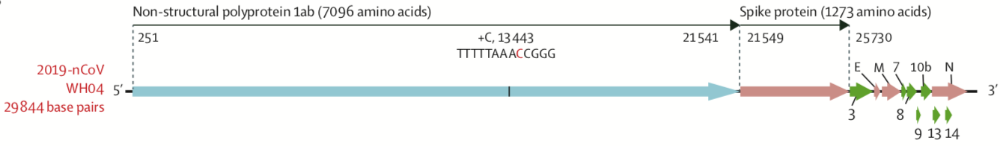

Collected from different resources and publications.
In late December 2019, patients presenting with viral pneumonia due to an unidentified microbial agent were reported in Wuhan, China. A novel coronavirus was subsequently identified as the causative pathogen, provisionally named 2019 novel coronavirus (2019-nCoV).
Based on phylogeny, taxonomy and established practice, the Coronavirus Study Group (CSG) formally recognizes this virus as a sister to severe acute respiratory syndrome coronaviruses SARS-CoVs and designates it as SARS-CoV-2.
Notably, SARS-CoV-2 is not a descendant of SARS-CoV. The introduction of each of these viruses into humans was likely facilitated by unknown external factors, possibly through Bats or Pangolin that were forcibly caged in one of the vet market in China (Video provided below).
Bats (Left) and Pangolins (Right) represent the possible sources many many viruses
Possible source of Zoonotic transmission of Virus to humans
The SARS-CoV-2 genome consists of a single, positive-stranded RNA that is approximately 30k nucleotides long. The overall genome organization is similar to that of other coronaviruses. The genome encodes the open reading frames (ORFs) common to all betacoronaviruses, including ORF1ab that encodes many enzymatic proteins, the spike-surface glycoprotein (S), the small envelope protein (E), the matrix protein (M), and the nucleocapsid protein (N), as well as several nonstructural proteins

Using cryo-electron microscopy (cryo-EM), researchers around the world are trying to understand its infection of human cells. These cryo-EM researchers were able to determine the structure of SARS-CoV-2 spike protein and its cellular receptor during infection. In recent years, cryo-EM has become a popular and effective method for biological research – studying the structure of biologically important molecules like proteins and viruses at near-atomic resolution to better understand 3D structure and functionality. These findings will support and accelerate design of vaccines and the development of treatments for COVID-19. Researchers have made their structures from cryo-EM publicly available.
SARS-CoV-2 structure (image courtesy of CDC)
A computer rendering of a coronavirus, showing the characteristic “crown-like” glycoprotein spikes that inspired their name. Severe acute respiratory syndrome coronavirus 2 (SARS-CoV-2), which causes COVID-19, belongs to this virus group
Copyright © 2020 Abhilash Kannan.